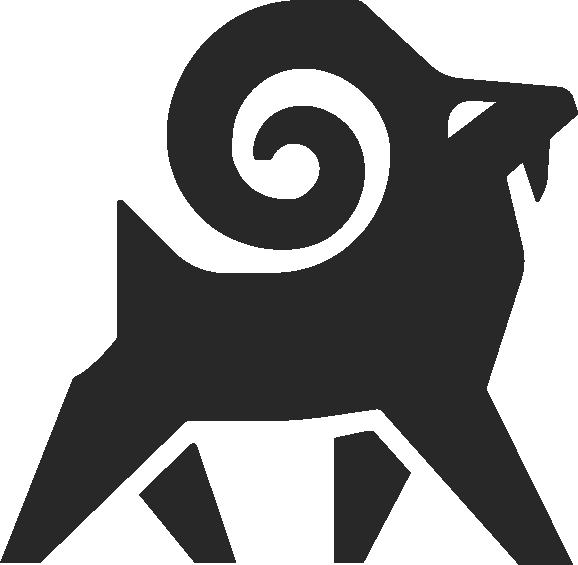

Part I
Fundamentals of LLMs & Entity-Based Positioning
LLMs don't think in keywords. They think in entities and relationships. Understanding this changes everything about how we build content.

Your site's own pages are the primary signal for entity definition. What you say about yourself matters most.
Wikidata and related platforms carry outsized weight as structured, trusted knowledge sources for LLMs.
Backlinks and citations from authoritative sources reinforce entity relationships and build placement.
Reviews, social mentions, and organic conversation create trust signals that LLMs weigh heavily.
User queries ChatGPT, Gemini, Claude, Perplexity, or Grok for a recommendation
LLM responds with entity-based recommendations from its knowledge map
User Googles the firm name to verify its existence and credibility
They check reviews, engagement, and company info — homepage is the critical verification page
KEY TAKEAWAY
The homepage is no longer just a front door — it's the verification checkpoint after AI-driven discovery. Every element must communicate identity clearly to both robots and humans.
Establishing who the firm is. Making the entity unmistakable, unambiguous, and well-defined in the LLM knowledge map.
Positioning the firm favorably in the LLM relationship map. Moving the entity cube closer to relevant practice areas and locations.
Helping prospects convert once they reach the website. May not directly improve AI visibility, but still a critical business function.
FRAMEWORK PRINCIPLE
This is not one-size-fits-all. Every asset is tailored to client objectives. The shift is from keyword-driven, volume-based content to goal-driven, prescriptive content.
The single most-visited page. The primary landing point after branded searches. Must clearly communicate identity to both robots and humans.
The single most important page for defining entity on the website. Historically underutilized, now essential.
Attorneys are distinct entities from the law firm. They should be closely related in the LLM map but treated as separate entities.
More important today than at any point in internet history. Distributed to 200+ websites immediately.
Focus on differentiation, not generic service descriptions. "Why you are the best choice" — not "here's what we offer."
Traditional pages explaining what the firm does. Still valuable as foundational entity definition content.
Dedicated review pages — not just widgets pulling Google reviews. Details matter more than settlement amounts alone.
Third-party mentions carry higher inherent trust than first-party claims. Media perception of lawyers as "necessary evil" requires active trust-building.
| Requirement | Details |
|---|---|
| State identity explicitly | "Here's who I am, what I do, and where I do it" — directly, not by implication |
| Declare profession | Directly say you are a lawyer. Don't assume visitors or AI will infer it from context. |
| State locations | Directly state headquarters and all city locations. Don't rely on embedded maps or directory listings alone. |
| Entity association | Think about the entities/nouns you want associated with the firm and explicitly include them on the page. |
| Avoid implied info | If it's important, say it. Every assumption is a missed signal to both humans and AI. |
This framework isn't about catching up. It's about setting the standard that the rest of the market will eventually follow.
Carries minimal weight in AI search. Should be deprioritized in favor of higher-impact strategic assets. Still provides some traditional SEO value but is no longer a strategic focus.
Minimal impact on AI visibility. Historically emphasized in SEO but no longer a strategic priority. Time and resources are better spent on entity-defining assets.
RESOURCE ALLOCATION
Every hour spent on blog content or glossary definitions is an hour not spent on homepage optimization, about page refinement, press releases, or hire-us differentiation. Prioritize accordingly.
The firms that define their entities clearly, position them strategically, and differentiate boldly will dominate AI-driven search. This is the playbook.